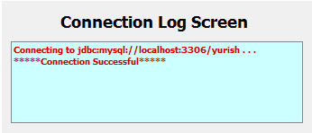
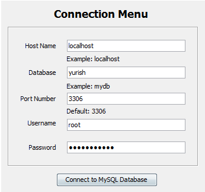

In order to establish the connection between the application and remote data source you should first complete the authentication process and then click on "Connect to MySQL database" button.
In host name field you should provide the name of the host that will be place instead of "host name" in general JDBC URL connection line jdbc:mysql://"host name":"port"/"database"
In port field you should provide the number of the port that will be place instead of "port" in general JDBC URL connection line jdbc:mysql://"host name":"port"/"database"
In database field you should provide the name of the database that will be place instead of "database" in general JDBC URL connection line jdbc:mysql://"host name":"port"/"database"
When all fields are filled you should click on "Connect to MySQL database" button
If connection is successful you should see:

Example how to connect to MySQL database
